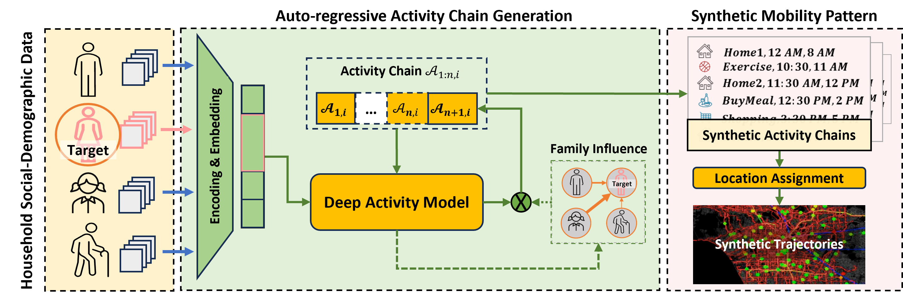

Traveler Digital Twin: Next Generation Travel Demand Model
Project Overview
Developed under the HAYSTAC program, this work generates daily activity and location sequences from demographic and household information.
The model can be fine-tuned with local data and combined with activity location assignment. Generated travel demand is then evaluated in large-scale traffic simulation.

Figure 1: The DeepAct Model Workflow
Interactive Visualization: DeepAct Model
Each dot represents a person moving between activities over time. Change the speed or color grouping to explore the generated activity patterns. Visualization adapted from FlowingData.
Synthesized travel demand loaded into the Los Angeles road network using MATSim.
Model Evaluation
Evaluation compares generated activity-location chains with observed distributions in nationwide and regional datasets, including California, Washington, and Mexico City.